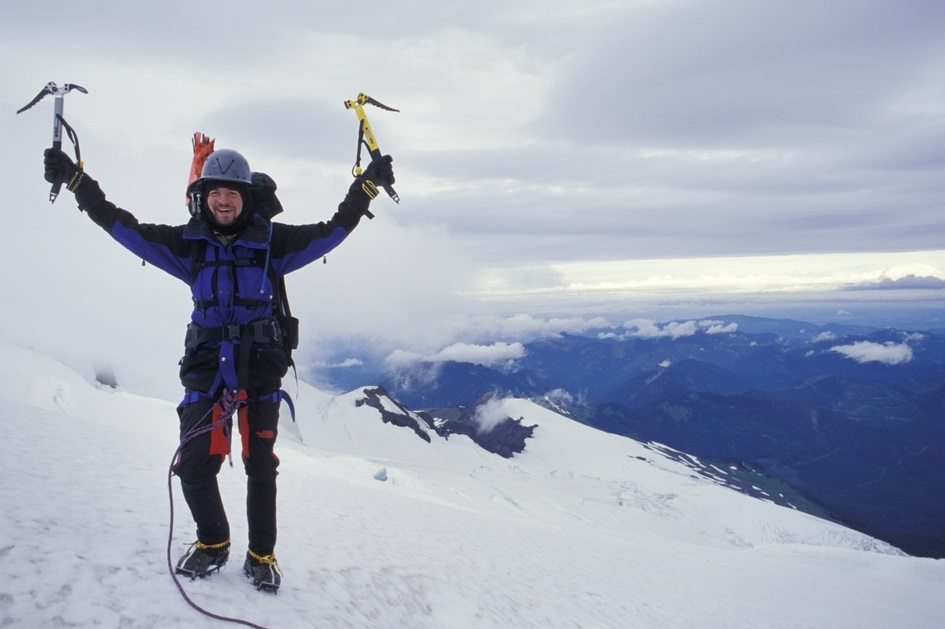
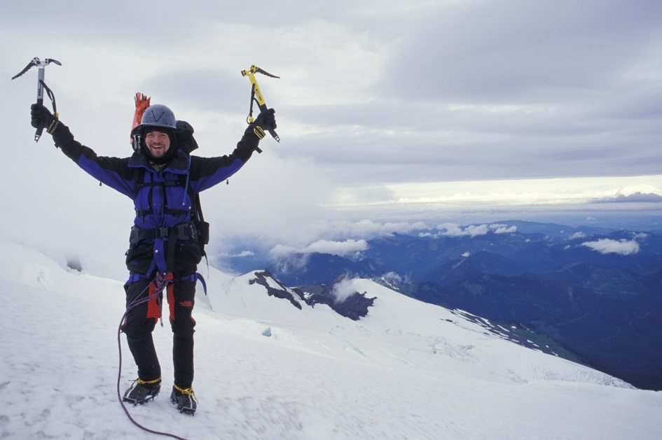

Що таке подорож?
Подорож – це не лише можливість відпочити і набратись нових історій та вражень.
Мандрівки допомагають вийти із зони комфорту, усвідомити насправді важливі у житті речі і навіть роблять вас впевненішими у собі.
5 речей, які непомітно стаються з вами під час мандрівок, зібрав The Huffington Post.
Мандрівки допомагають вийти із зони комфорту, усвідомити насправді важливі у житті речі і навіть роблять вас впевненішими у собі.
5 речей, які непомітно стаються з вами під час мандрівок, зібрав The Huffington Post.
- Мандрівки можуть зробити вас більш турботливою та освіченою людиною.
-
Подорожі виводять вас зі звичної зони комфорту. Ви можете змінитись в кращу сторону:
- У вас стане більше знайомих
- У вас стане більше життєвого досвіду
- Ви краще пізнаєте себе
- Ви відкриєте в собі нові навички
- Мандрівки можуть зробити вас впевненішим та не боятись власної сили.
- Подорожі змушують вас зрозуміти, що є важливим у житті і дають перспективу.
- Подорожі можуть пробудити вас, навіть якщо ви цього не хочете.
Що може дати вам мандрівка?
Мандрівка в нову країну може вам дати різноманітні враження, які змусять вас більше піклуватись про своїх ближніх. І дадуть ширше розуміння того, що насправді відбувається в світі. Наприклад, після "арабської весни" Хель Івлин поїхала до Каїру. Вдома всі боялись за її безпеку. А вона зробила статтю про те, як пила чай на площі Тахрір, і як це було безпечно та відкрито.
Коли ви мандруєте іншою країною, не можете передбачити і контролювати все.
Тому розслабтесь. Як тільки ви це зробите, почнете більше веселитись, відчувати життя за межами своєї зони комфорту. Коли вихід із зони комфорту відбувається далеко від дому, багато людей відчувають полегшення. І намагаються вхопити та повторити цю поведінку в звичайному житті. Часто вони розуміють, що застрягли, тому круто змінюють своє життя чи кар'єру.


Коли ви далеко від свого повсякденного життя, це може змусити вас думати про те, чого ви дійсно хочете від життя.
Коли ви далеко від свого повсякденного життя, це може змусити вас думати про те, чого ви дійсно хочете від життя.А несподівані виклики, які можуть постати перед вами на екскурсіях чи мандрівках, змусять повірити в себе набагато сильніше.
Мандрівка – новий початок для багатьох, незалежно від того, чи ви подорожуєте з кимось, чи самі.
Це дає можливість сумувати за тим, що є для вас дійсно важливим. І усвідомити, що є другорядним. Тому коли ви повертаєтесь додому, вам набагато легше скинути з себе ті частини життя, які стримують вас, і прийняти ті, які приносять радість.
Все своє життя Хель була атеїсткою.
Після двох тижнів в Єгипті вона стала віруючою. Ви не можете знати, коли відбудуться найглибші моменти вашого життя. На думку Хель, річ у тому, що подорож може стрепенути вас настільки, що ви припините стримувати свої надії. Мандрівка може допомогти вам знайти найдивовижніші зміни в своїй психіці у тому середовищі, в якому ви готові дозволити цим змінам відбутись.